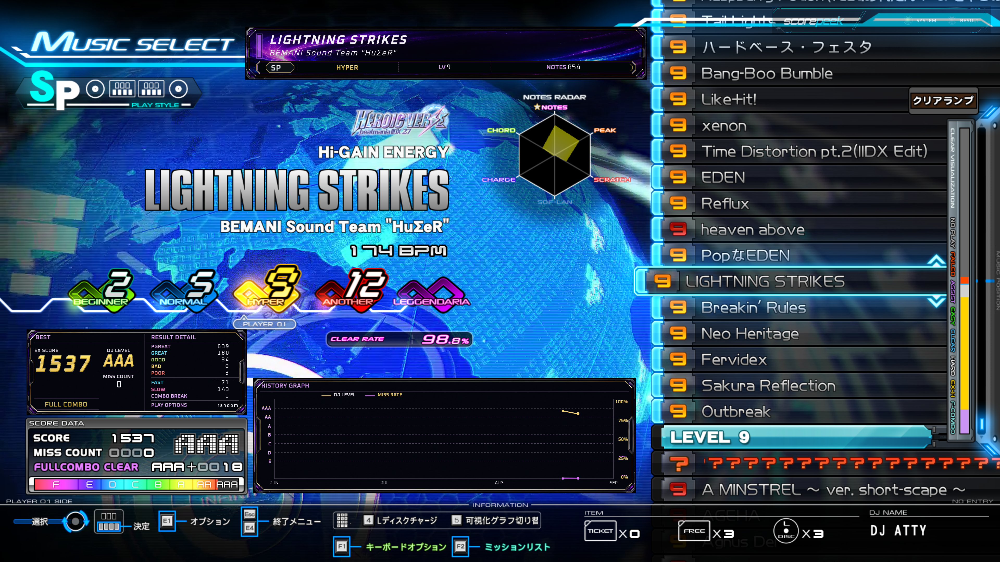
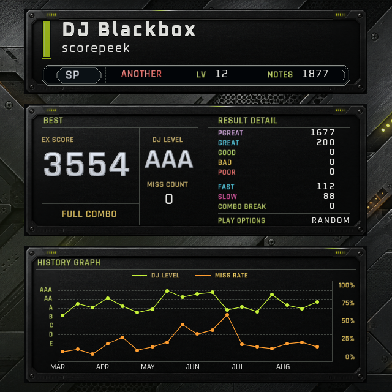

Your play
プレイのそばに、いつでも。
自分の成長をリアルタイムで確認しながら、より楽しくプレイできます。
IIDX score tracking & overlay
プレイ結果を画面から認識し、ローカルに記録。ベスト、リザルト詳細、履歴をoverlayに映し出します。
GitHubで見る
How it works
面倒な操作は必要ありません。いつものプレイが、そのまま記録と表示につながります。
画面からリザルトを読み取る
スコアと履歴をローカルに保存
ベストと成長をすぐに表示
In your play & stream
いつものプレイ環境で、リアルタイムに表示。配信でも、同じoverlayでスコアと成長を共有できます。

Your play
自分の成長をリアルタイムで確認しながら、より楽しくプレイできます。
Your stream
OBSなどの配信softwareでも簡単に表示。いつものプレイを、もっと魅力的に共有できます。
Technical principles
ゲームの内部データに依存せず、画面から認識して記録。認識と表示を分離した設計で、柔軟な拡張が可能です。